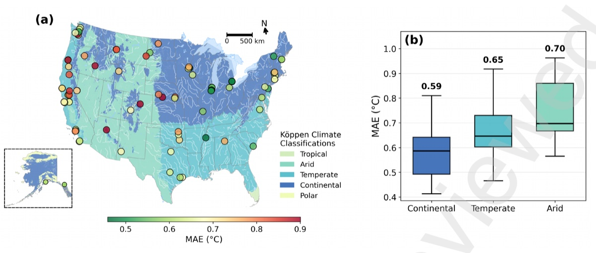
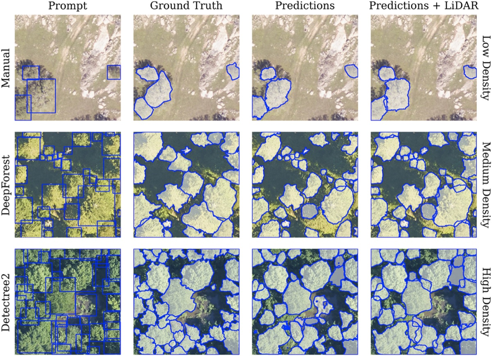
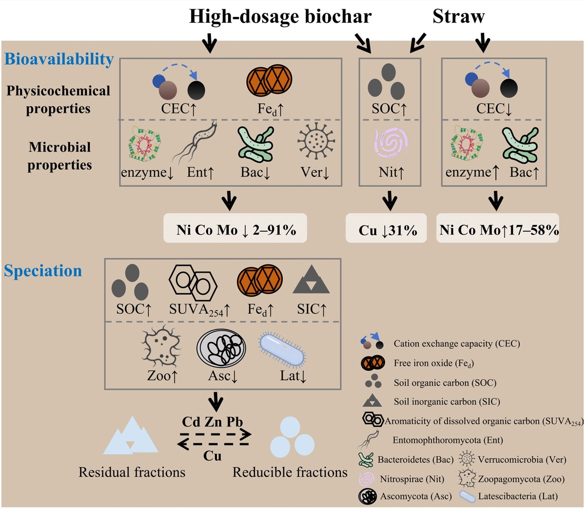

Nationwide calibration of PurpleAir temperature sensors
Using nearly 800,000 paired hourly observations, we developed a machine-learning calibration framework that reduced temperature error by more than 88%.
MIT Institute for Data, Systems, and Society
PhD student in Social and Engineering Systems
I am a first-year PhD student at MIT IDSS, fortunate to be advised by Prof. Daniel Varon. I am interested in using satellite observations and quantitative models to better understand greenhouse-gas emissions.
Before beginning my PhD, I had the opportunity to work with Prof. Edward Boyle at MIT, Prof. Lu Liang at UC Berkeley, and Prof. Charles Taylor at Harvard Kennedy School. At Beijing Normal University, I worked with Prof. Xin Tian on environmental systems modeling and with Prof. Ke Sun on soil carbon and biogeochemistry.

As I begin my PhD, I am exploring how satellite measurements and atmospheric models can be used to quantify methane emissions. I am especially interested in machine-learning methods that can make inversion systems faster and more scalable while retaining physically meaningful estimates and uncertainty.
Topics methane remote sensing · inverse methods · machine learning · Earth observation

Using nearly 800,000 paired hourly observations, we developed a machine-learning calibration framework that reduced temperature error by more than 88%.

We compared manual and automated prompts for zero-shot crown segmentation and tested how LiDAR can filter false positives and refine delineations.

Using a long-term field experiment and 376 soil samples, we compared biochar and straw amendments and found strong co-benefits for heavy-metal immobilization and carbon sequestration.
Other projects: rice cultivation, agricultural policy, and methane emissions; vegetation and dust dynamics; long-term photovoltaic planning in China; urban soil contaminants and environmental risk.
Selected work. See Google Scholar for the current list.
Nationwide Evaluation and Calibration of PurpleAir Temperature Sensors for Urban Thermal Environment Research
Yunqian Zhang, Yan Rong, and Lu Liang. SSRN preprint.
Fourteen-year field evidence reveals superior co-benefits of biochar in immobilizing heavy metals and sequestering carbon
Mengmeng Ma, Yunqian Zhang, et al. Biochar 8, 51.
LiDAR-Augmented Zero-Shot Tree Crown Segmentation Using SAM 2
Yun Zhu, et al., Yunqian Zhang, Ma Qian, and Lu Liang. Information Geography, 100025.
Spatial distribution, source identification, and potential risks of 14 bisphenol analogues in soil from different functional zones in Chengdu, China
Meng Liao, et al., Yunqian Zhang. Environmental Pollution 352, 124064.
Polyethylene microplastics hamper aged biochar's potential in mitigating greenhouse gas emissions
Yi Chen, et al., Yunqian Zhang, et al. Carbon Research 4, 5.

2026–present
PhD student, Social and Engineering Systems
Institute for Data, Systems, and Society (IDSS)

2024–2025
Visiting student
Berkeley Global Access Program
GPA 4.00 / 4.00
2022–2026
BSc in Environmental Science
School of Environment
GPA 3.86 / 4.00
Started my PhD in Social and Engineering Systems at MIT IDSS.
Our nationwide PurpleAir temperature calibration study was posted as an SSRN preprint.
Our 14-year field study on biochar and soil carbon was published in Biochar.
Presented my PurpleAir sensor calibration research at the NSF NCAR symposium on extreme heat and heat risk.
Away from papers and code, I play the flute, sing, and enjoy movies.
Music has stayed with me for years: I played flute in a school orchestra and received Best Instrumental Performance at the 2022 Beijing University Music Festival.